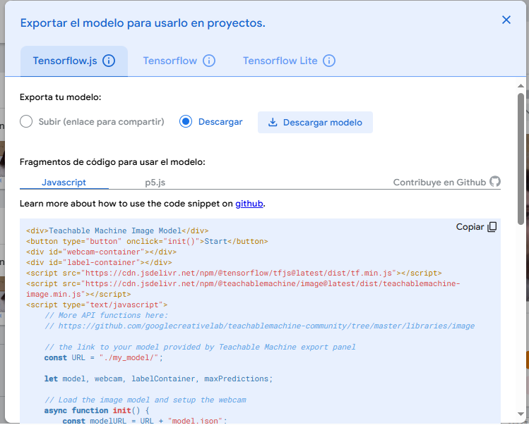
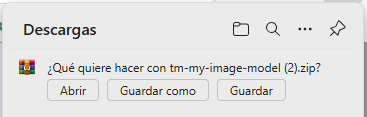
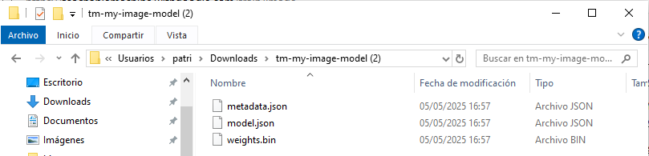

Cuando terminamos el modelo en Teachable Machine y elegimos exportarlo para la web, nos da un modelo compatible con TensorFlow.js. Esto incluye:
- Dos archivos model y metadata (.json).
- Un archivo weights (.bin)
- Y un pequeño ejemplo en JavaScript:

<div>Teachable Machine Image Model</div>
<button type="button" onclick="init()">Start</button>
<div id="webcam-container"></div>
<div id="label-container"></div>
<script src="https://cdn.jsdelivr.net/npm/@tensorflow/tfjs@latest/dist/tf.min.js"></script>
<script src="https://cdn.jsdelivr.net/npm/@teachablemachine/image@latest/dist/teachablemachine-image.min.js"></script>
<script type="text/javascript">
// More API functions here:
// https://github.com/googlecreativelab/teachablemachine-community/tree/master/libraries/image
// the link to your model provided by Teachable Machine export panel
const URL = "./my_model/";
let model, webcam, labelContainer, maxPredictions;
// Load the image model and setup the webcam
async function init() {
const modelURL = URL + "model.json";
const metadataURL = URL + "metadata.json";
// load the model and metadata
// Refer to tmImage.loadFromFiles() in the API to support files from a file picker
// or files from your local hard drive
// Note: the pose library adds "tmImage" object to your window (window.tmImage)
model = await tmImage.load(modelURL, metadataURL);
maxPredictions = model.getTotalClasses();
// Convenience function to setup a webcam
const flip = true; // whether to flip the webcam
webcam = new tmImage.Webcam(200, 200, flip); // width, height, flip
await webcam.setup(); // request access to the webcam
await webcam.play();
window.requestAnimationFrame(loop);
// append elements to the DOM
document.getElementById("webcam-container").appendChild(webcam.canvas);
labelContainer = document.getElementById("label-container");
for (let i = 0; i < maxPredictions; i++) { // and class labels
labelContainer.appendChild(document.createElement("div"));
}
}
async function loop() {
webcam.update(); // update the webcam frame
await predict();
window.requestAnimationFrame(loop);
}
// run the webcam image through the image model
async function predict() {
// predict can take in an image, video or canvas html element
const prediction = await model.predict(webcam.canvas);
for (let i = 0; i < maxPredictions; i++) {
const classPrediction =
prediction[i].className + ": " + prediction[i].probability.toFixed(2);
labelContainer.childNodes[i].innerHTML = classPrediction;
}
}
</script>

